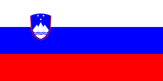

PRVA LABORATORIJSKA VJEŽBA
Croatia

Flag of Croatia
Designed by Miroslav Šutelj.
Adopted on 21 December 1990.
Slovenia

Flag of Slovenia
Designed by Marko Pogačnik.
Bosnia and Herzegovina

Flag of Bosnia and Herzegovina
Designed by Mladen Kolobarić.
Adopted on 4 February 1998.
| Stupac 1 |
Stupac 2 |
Stupac 3 |
| Ćelija 1 |
Ćelija 2 |
Ćelija 3 |
| Ćelija 4 |
Ćelija 5 |
| Ćelija 6 |
Ćelija 7 |